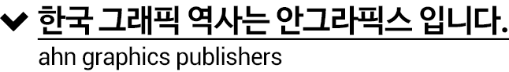
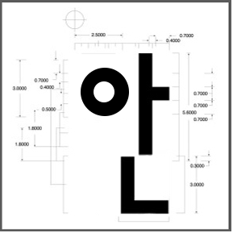
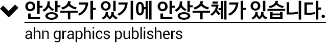
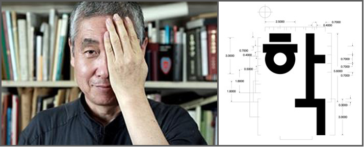

1985년 2월 (주)안그라픽스는 한국 그래픽 디자인 역사를 새롭게 만들어 가기 위한 크리에이티브 집단으로 출발하면서, 그 이념을 전파하고자 출판사를 함께 설립하였습니다.
안그라픽스는 실험 정신, 끝없는 창의력, 지성이란 모토 아래 타이포그래피와 에디토리얼 디자인 분야를 개척해 왔으며,
이러한 정신과 마음으로, 디자인 출판 분야에서도 가장 전문적이고 창의적이며 비판적인 글과 좋은 모양새를 갖춘 책을만들어 왔습니다.
안그라픽스는 또한 최고의 디지털 서비스를 제공하면서 정보 디자인, 인터랙티브 디자인 분야의 좋은 책을 기획 출간하고 있습니다.
그뿐만 아니라 한국전통문양집 등을 통해 우리 고유의 디자인 요소를 오늘날 다시 살려 내어 한국 디자인의 정체성을 구축하는 작업과 디자인의 사회적 공공성을 실현하기 위한 연구와 작업 그리고 출판에 힘쓰고 있습니다.
앞으로 안그라픽스는 정보의 디자인화, 디자인의 사회화를 지향하며 밀레니엄 시대를 앞서 열어갈 것입니다.


안상수는 1952년 충주에서 태어나 1970년 홍익대 응용미술학과에 입학하여 디자인의 길을 걷게 되었다. 학창시절에는 홍익대학보사 편집장을 지냈으며 《와우》라는 만화를 연재하기도 했다.
1977년에 졸업하고 금성사 디자인실(현 LG전자 디자인연구소)에 입사하였으며 희성산업에서 디자이너로 일했다.
1981년에는 잡지 《꾸밈》에서 아트 편집을 하였으며 종합교양지 《마당》의 창간부터 아트디렉터로 일했고, 1983년에는 《멋》의 창간에 참여하고 아트디렉터로 일하였다.
이때 석사과정중에 한글 타이포그래피 가독성에 대한 연구를 하고 '신문활자의 가독성 연구'로 한국 신문상을 수상하게되었다. 1983년 12월에는 《월간 디자인》의 올해의 인물로 선정되었다.
안상수체로 대표되는 다수의 글꼴을 디자인한 한국 타이포그래피의 거장이다. 그외 이상체, 미르체, 마노체 등을 개발하였고, 아모레퍼시픽의 브랜드 글꼴인 아리따 서체의 핵심 디자이너이기도 하다.
대표 저서로는 한글디자인(1999) (안상수, 한재준 공저), 한국전통문양집(1986)이 있다.그의 가장 큰 업적은 한글 서체의 가장 큰 고정관념 중 하나였던 네모틀 글꼴에 대한 해방이다.그의 대표작인 안상수체가 대표적인 탈네모틀 글꼴이다.